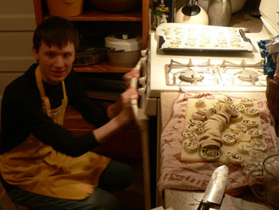
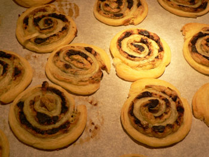

Perfect party food: black olive–pesto pinwheels
The best thing we made for the party was the black olive–pesto pinwheels in puff pastry. Mom actually made them, but I’m hijacking the post because of how many I ate and how delicious they were, and because I was in charge of slicing and baking them while she worked the crowd. Giant Eagle’s Market District saved the day for these, because we didn’t have time to make our own puff pastry and Whole Foods only carried the expensive DuFour brand. Pepperidge Farm was all we needed.
The recipe is pretty simple, and it appears below. Mix cream cheese, parmesan, green onions, and pesto. Spread this mixture on thawed puff pastry. Sprinkle it liberally with black olives, roll it up, and stick it in the freezer. Once it’s solid, slice it into 1/4-inch rounds.

Bake them until they are well browned and completely cooked through. The recipe says 10 to 12 minutes, but I left them in for at least 20 to remove any doughiness. Maybe I sliced them too thick, but I measured 1/4 inch.

These are extremely good to eat: salty and soft and flaky and cheesy. I ate three of them, which I felt bad about because of the apparently starving masses in the party room. But it was my dinner! I also handed them out hot from the oven to the nice people who came to visit me.
The logs can be frozen for up to two months, and the recipe makes between 75 and 100. This savory treat will definitely appear at my next party, possibly with variations.
Ingredients
- 12 oz. cream cheese, softened
- 1 cup grated parmesan
- 2 green onions with tops, minced
- 1/3 cup pesto
- 1 package frozen puff pastry sheets, thawed until warm enough to roll out but still chilled
- 1 1/2 cups black olives, coarsely chopped
Beat together cream cheese, parmesan, green onions, and pesto until well blended. On a lightly floured surface, roll half of puff pastry (1 sheet) into 10×6 inch rectangle (ours was a different size and it didn’t seem to matter). Spread half of the cheese mixture over pasty, covering it completely.
Scatter half the olives over filling. Roll lengthwise like a jelly roll, starting at the long side to make a log. Repeat with remaining pastry, filling, and olives to make two logs. Freeze them until solid.
Pre-heat the oven to 375ºF. Remove logs from freezer and slice into 1/4-inch-thick rounds. Place 1 1/2 inches apart on non-stick baking sheets. Bake for 15 minutes or until lightly browned.
Comments
Although we tried to resist it because we didn’t want to be hauling things in and out of the oven while the party was going on, people really do like hot hors d’oevres, in the winter, anyway – these and the meatballs were the most popular things we served. It’s too bad there’s no practical way to manage them when you have a big crowd, short of having your party catered, that is.
These sound great! And as far as hot hors d’oevres go, it doesn’t sound like it could be too much simpler at the time of the party — just slice and bake at that point.
You two really know how to h’or doevre!
I agree, you don’t need expensive puff pastry for something like this. Although Dufours is devine for tarts!
I didn’t get any of these either! I would love to add my two cents about how wonderful the food tasted at your fabulous soiree, but there was none left by the time I arrived. I guess that itself is evidence enough.
I love the idea of these. They sound easy and delicious, although I find the idea of working with pastries and doughs and whatnot to be a little frightening, for some reason. I’m determined to overcome this fear and once do, I plan on making these. Thanks!
hi, i was looking for some cool kind of food that i could give to some little kids for a pary. my older sister made penguins out of carrets and olives. but i want to know if you have anything else. my email is brit893any@yahoo.com please send some. thanks
What did I do wrong? I froze 2 logs as directed. Your instructions said to take out a log and cut it into 1/4" slices. Was I supposed to thaw the log first because when my DH tried to cut the frozen log into slices, the pinwheel crumbled apart into a pile of frozen chunks. I was so disappointed because the filling tasted wonderful when I first mixed it together & thought to myself that this recipe was going to be killer good when baked. Help please. I really would like this recipe to work.
Foodfly: I’m sorry you had trouble! It sounds like you did everything right, and yes, you do slice them when they are frozen. I have made these twice in the past year. The first time, I had the same crumbling problem that you did. I believe the problem was that they were not rolled tightly enough, because when I made them a few weeks ago, I rolled them as tightly as possible, and I had no crumbling at all.
What kind of pastry did you use? Homemade, Pepperidge Farm, Dufour, or what? I’ve used Pepperidge Farm all three times that I’ve done the recipe.
I used Pepperidge Farm also. Did you use a certain type of knife — straight edge or serrated — that made the difference. I still have both logs frozen in my freezer. The recipe was easy and straight forward, but in retrospect I thought maybe when the recipe said place the logs in freezer until solid that maybe it did not mean “frozen solid” just “firm” enough to cut.
Mine are definitely frozen stiff aka hard as rocks. They are rolled like a cinnamon roll swirl or jelly roll would be rolled; but not tight, if that is the trick I’m missing.
So yours were frozen when you cut them into slices? I guess that means that the problem is in the rolling?
P.S. I tasted the frozen bits of unbaked filling/dough that chunked off. Even raw, the pinwheel is tasty :)
Hi,
Did you make your own pesto? Do you buy pesto at a grocery store?
Thank You,
Joanne
I’m not sure I remember, do you, Leland? But since we were doing so much cooking that day I’m guessing we used prepared pesto; since you mix it with other ingredients that home-made quality would get lost in the translation, anyway.
Add a comment